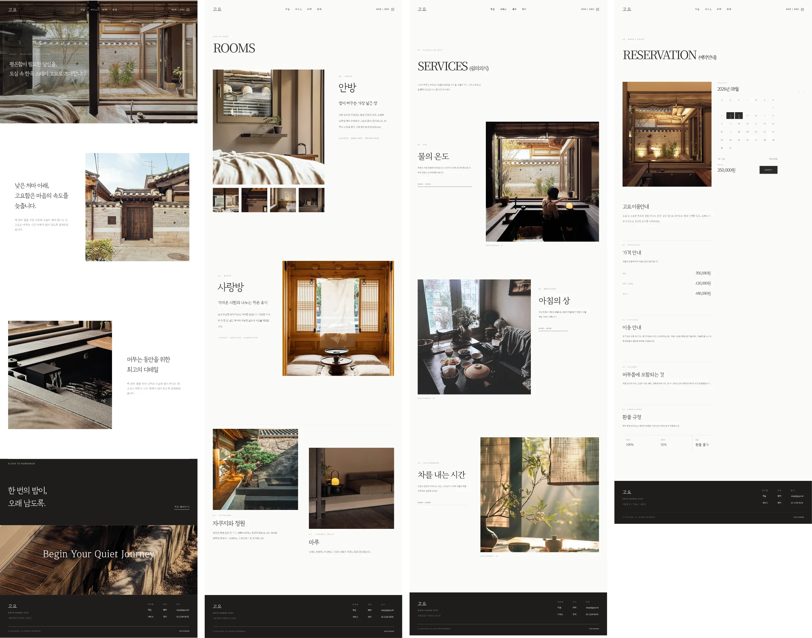
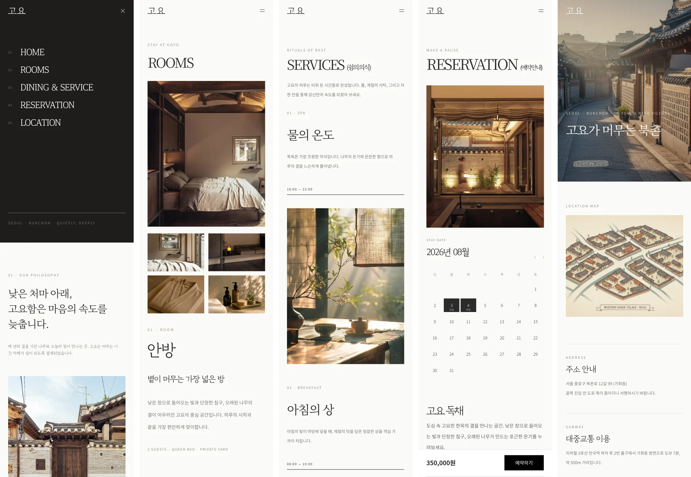

Overview
도심 한복판의 한옥 스테이. 화려하게 보여주는 대신 조용히 머무는 감각을 그대로 전하는 것이 목표였습니다.
My Role
브랜드 기획, 아이덴티티, 웹 디자인, 퍼블리싱까지 전 과정을 혼자 진행했습니다.
Build
메인 · 객실 · 서비스 · 예약 · 오시는 길, 다섯 페이지. 데스크톱과 모바일 두 화면으로 각각.
Stack
- HTML
- CSS
- JavaScript
- GSAP
- flatpickr
-
01
레퍼런스 찾기
-
02
기획
-
03
시안 잡기
-
04
시안 만들기
-
05
코드로 옮기기
-
06
배포
Foundations

-
Canvas
paper
#FBFBF9 -
Inverse
footer
#1E1D1B -
Subtle
panel
#E9E7E0 -
Primary action
#2A2B2A -
Accent
wood
#605340 -
Holiday
muted rose
#B98D8D -
Scrim
20%
#CCCCCC -
Border
quiet line
#E9E7E0
- 큰 제목 Noto Serif KR 낮은 처마 아래, 마음의 속도를 늦춥니다
- 공간 · 서비스의 편집형 표기 GyeonggiBatang 안방 · 사랑방 · 다도 · 조식
- 정보 · 조작 요소 Noto Sans KR 예약하기 · 1박 180,000원 · 2박 3일
PC

Mobile
